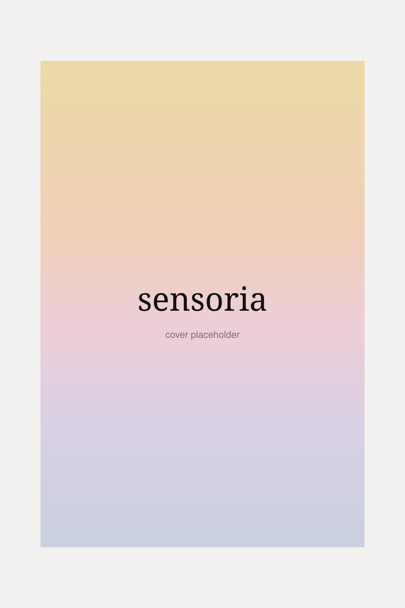

details
- Title
- Sensoria
- Series
- Book one
- From
- Offline Objects
- Status
- Forthcoming
- Form
- Essay × field guide
- Format
- Print & ebook (TBD)
book one
Painting on the full range of human perception— not vision alone.

The works gathered in this volume share a premise: that the painting process can operate on the full range of human perception, not vision alone. Hyun Sun Jo and Denis Geary Lopez are each activating the body's entire repertoire of sense and feeling in their artistic process, the integrated system through which a living being receives and processes the world.
“There is a kind of knowing that arrives only when the eyes soften—when the hand learns the grain of a thing before the mind names it.”
— from Sensoria